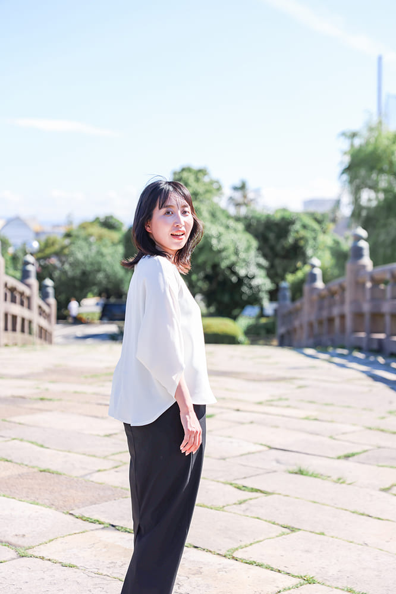
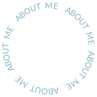
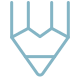
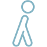

はじめまして
Hisadome Shiho
久留 志保
1987年生まれ、鹿児島県在住。
子育てをしながら、Webデザインを学んでいます。
転職、結婚、出産、再就職と環境の変化を経験する中で、働き方の選択肢を広げたいと思うようになりました。
以前から、人やサービスの魅力、その背景にある想いに触れることが好きでした。そんな想いと、自分が学び続けられることが重なり、たどり着いたのがWebデザインです。
これまでアパレル販売、医療事務、総務など、人と関わる仕事やサポート業務に携わってきました。その経験を活かし、相手の立場に立って考えながら、伝えたい魅力や想いが届くデザインを目指しています。


伝わるかたちへ
-
デザイン
情報の整理や視線の流れを意識し、見る人が迷わず、心地よく情報を受け取れるデザインを心がけています。目的やターゲットに合わせて、伝えたいことが無理なく伝わるよう、レイアウトや表現を工夫しています。
-
コーディング
HTML・CSS、jQueryを用いたコーディングを行っています。規則性のある記述を意識し、見やすく分かりやすいコードを書くよう心がけています。複雑な動きの実装には、AIも活用しながら効率的に対応しています。
-
ライティング

伝えたい想いや魅力を整理し、読み手の立場を意識しながら、一つひとつの言葉を丁寧に選び、分かりやすく伝わる文章を心がけています。デザインと合わせて、より伝わりやすい表現になるよう意識しています。
大切にしていること
-
人に寄り添う
人に興味を持ち、相手の状況や気持ちを想像しながら「どうしたら喜んでもらえるか」を考える時間に楽しさを感じます。相手の喜ぶ顔を見ると、嬉しくなります。サプライズを考えることも好きです。
-
学びを楽しむ
気になったことや必要だと感じたことは、自分で調べて理解しながら取り入れるようにしています。これまでの経験の中でも、必要なことをその都度学び直しながら、少しずつ自分の中に積み重ねてきました。
-
目的に向かう
目的から逆算してやるべきことを整理し、優先順位をつけながら進めています。状況に応じて柔軟に調整できるよう、余白を持ったスケジュール管理を心がけています。Notionで進捗を見える化し、計画的に取り組んでいます。
好きなこと
-
ラジオ
家事をしながら、音声配信アプリで聴いています。手を止めることなく学びや気づきを得られるため、限られた時間を有効に使えるところが魅力です。
-
娘と過ごす時間
しっかり者の娘ですが、無邪気な一面もあり、日々癒されています。一緒に過ごす時間を大切にしながら、その笑顔や成長を楽しみにしています。
-
散歩

意外な発見や季節の移ろいを感じながら、目的を決めず家族と夕方に歩いています。気分転換にもなり、気持ちもリフレッシュします。